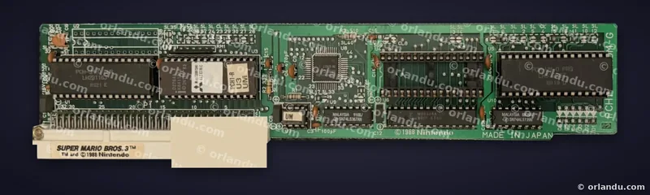

Ranked: Every PlayChoice-10 Game, and the One That Charted Early
Nintendo Power asked America to rank its NES games for six and a half years. Here is where all 52 PlayChoice-10 games came out, and the one that was on the chart before its cartridge was on sale.

The cart wall here holds the 52 games Nintendo released for the PlayChoice-10, the arcade machine that let you sample NES games on a timer. Almost all of them were also cartridges you could take home. That raises a question the wall can’t answer by looking at it: once people had these games in the living room, which ones did they keep playing?
There is a record of that. From its first issue in the summer of 1988, Nintendo Power printed a ranked chart of NES games, and it kept printing one until December 1994. That is 63 charts. Line them up against the 52 boards and the wall starts to sort itself.
How the chart worked
Each chart blended three polls: readers (Players’ Picks), Nintendo’s own game counselors (Pros’ Picks) and retailers (Dealers’ Picks). Every game got a point total, and the totals set the order.
It began as a Top 30 printed every other month and went monthly in 1991. In January 1992 it became a Top 20, when the Super NES and Game Boy got lists of their own. The NES list ran through the December 1994 issue. The month after, it was gone.
The three groups did not always agree. In the very first issue the players put Mike Tyson’s Punch-Out!! on top, the counselors chose The Legend of Zelda, and the dealers went with R.C. Pro-Am.
Day one
The first chart, July/August 1988, has 30 games on it. Sixteen of them are on the wall.
The Legend of Zelda was number one. Right behind it came Mike Tyson’s Punch-Out!! at 2, Metroid at 3 and Super Mario Bros. at 4. Further down: R.C. Pro-Am, Rad Racer, Double Dribble, Pro Wrestling, Castlevania, Kung Fu, Rush’n Attack, Excitebike, Baseball, Contra, Mario Bros., Gradius and Rygar.
More than half of that first chart is PlayChoice-10 library.
Thirty-six made it. Sixteen never did.
Across all 63 charts, 36 of the 52 games appear at least once.
The sixteen that never show up are 1942, Balloon Fight, Captain Skyhawk, Duck Hunt, Hogan’s Alley, Ninja Gaiden III, Power Blade, Rad Racer II, Rockin’ Kats, Tennis, The Goonies, Track & Field, Trojan, Volleyball, Wild Gunman and Yo! Noid.
One of those has a clean explanation. The Goonies was never sold as an NES cartridge in America, so there was nothing at home for readers to vote for. The PlayChoice-10 and its VS. System cousin were the only places to play it. The other fifteen were on store shelves and simply never collected enough votes.
The ranking
To put the 36 in order, give a game 30 points for a number one, 29 for a second place and so on down to 1 point for thirtieth, then add up all 63 charts. The early charts came out every other month, so each of those counts twice. A long stay and a high spot both count. Weight the points another way and places five through ten trade around; the top three do not move.
| Rank | Game | Score | Charts, of 63 | Highest spot |
|---|---|---|---|---|
| 1 | Super Mario Bros. 3 | 1,761 | 55 | 1 |
| 2 | Super Mario Bros. 2 | 1,540 | 60 | 1 |
| 3 | Metroid | 1,313 | 52 | 2 |
| 4 | Dr. Mario | 1,022 | 46 | 2 |
| 5 | Teenage Mutant Ninja Turtles | 717 | 29 | 1 |
| 6 | Mega Man 3 | 700 | 35 | 2 |
| 7 | Teenage Mutant Ninja Turtles II: The Arcade Game | 602 | 26 | 1 |
| 8 | Mike Tyson’s Punch-Out!! | 478 | 15 | 2 |
| 9 | Tecmo Bowl | 475 | 18 | 5 |
| 10 | Ninja Gaiden | 432 | 9 | 3 |
| 11 | Double Dragon | 388 | 11 | 4 |
| 12 | Baseball Stars | 378 | 23 | 8 |
| 13 | Contra | 364 | 12 | 4 |
| 14 | Mario’s Open Golf charted as NES Open Tournament Golf | 244 | 13 | 4 |
| 15 | Super Mario Bros. | 228 | 7 | 4 |
| 16 | Castlevania | 222 | 8 | 12 |
| 17 | R.C. Pro-Am | 204 | 7 | 6 |
| 18 | Ninja Gaiden II | 153 | 6 | 4 |
| 19 | Double Dribble | 134 | 8 | 10 |
| 20 | Rad Racer | 130 | 5 | 8 |
| 21 | Super C | 118 | 7 | 13 |
| 22 | Pro Wrestling | 88 | 3 | 11 |
| 23 | Gauntlet | 86 | 2 | 5 |
| 24 | Kung Fu | 44 | 2 | 14 |
| 25 | Rygar | 38 | 3 | 20 |
| 26= | Excitebike | 38 | 2 | 18 |
| 26= | Mario Bros. | 38 | 2 | 18 |
| 28 | Baseball | 36 | 2 | 21 |
| 29 | Rush’n Attack | 30 | 1 | 16 |
| 30 | Nintendo World Cup | 22 | 1 | 9 |
| 31 | Fester’s Quest | 21 | 3 | 19 |
| 32 | Gradius | 18 | 2 | 25 |
| 33 | Chip ’n Dale Rescue Rangers | 14 | 3 | 25 |
| 34 | Golf | 6 | 1 | 28 |
| 35 | Solar Jetman | 2 | 1 | 29 |
| 36 | Pin·Bot | 1 | 1 | 30 |
| Never charted | ||||
| — | 1942 | 0 | 0 | — |
| — | Balloon Fight | 0 | 0 | — |
| — | Captain Skyhawk | 0 | 0 | — |
| — | Duck Hunt | 0 | 0 | — |
| — | Hogan’s Alley | 0 | 0 | — |
| — | Ninja Gaiden III | 0 | 0 | — |
| — | Power Blade | 0 | 0 | — |
| — | Rad Racer II | 0 | 0 | — |
| — | Rockin’ Kats | 0 | 0 | — |
| — | Tennis | 0 | 0 | — |
| — | The Goonies | 0 | 0 | — |
| — | Track & Field | 0 | 0 | — |
| — | Trojan | 0 | 0 | — |
| — | Volleyball | 0 | 0 | — |
| — | Wild Gunman | 0 | 0 | — |
| — | Yo! Noid | 0 | 0 | — |
Super Mario Bros. 2 was on more charts than anything else on the wall, 60 of the 63, but it spent most of them in the middle of the list. Super Mario Bros. 3 was on five fewer and almost never left the top.
A few of the others are stranger than the numbers look.
Metroid was third on the first chart and fourth on the last one, six and a half years apart. In between it dropped off the list for most of 1991, then came back and climbed.
Baseball Stars reached its highest spot, number 8, in May 1994. It had first charted more than four years earlier.
Nintendo World Cup made the chart exactly once: at number 9, on the final one.
Gauntlet went the other way. It arrived at number 5, was 14th the next issue, and never appeared again.
The one that charted early
Super Mario Bros. 3 reached American PlayChoice-10 machines in July 1989. The cartridge did not go on sale until February 1990. In between, the way to play it in the United States was on one of those machines.
It was already on the chart. Super Mario Bros. 3 shows up at number 20 in the September/October 1989 issue and at 13 in January/February 1990. In March/April it is 7th, and that issue prints one line under it: “You’ve played it on Play-Choice 10 and now it’s coming home.”
A fair caution belongs here. The chart counted votes from Nintendo’s own counselors, and the magazine said in 1990 that they got to play new games before the rest of the country did. So the arcade machine can’t take all the credit for those early votes. But Nintendo Power drew the line from the PlayChoice-10 to the living room in its own pages.
Super Mario Bros. 3 on the chart
Position on each of its 55 charts, September/October 1989 to December 1994
Every position, as a table
| Issue | Position | Points |
|---|---|---|
| September/October 1989 | 20 | 1,685 |
| January/February 1990 | 13 | 2,026 |
| March/April 1990 | 7 | 3,754 |
| May/June 1990 | 1 | 11,595 |
| July/August 1990 | 1 | 18,710 |
| September/October 1990 | 1 | 24,964 |
| November/December 1990 | 1 | 22,365 |
| January 1991 | 1 | 10,556 |
| February 1991 | 1 | 12,556 |
| March 1991 | 1 | 12,249 |
| April 1991 | 1 | 8,020 |
| May 1991 | 1 | 10,918 |
| June 1991 | 2 | 9,615 |
| July 1991 | 1 | 9,739 |
| August 1991 | 1 | 9,220 |
| September 1991 | 1 | 9,029 |
| October 1991 | 1 | 8,726 |
| November 1991 | 1 | 7,939 |
| December 1991 | 1 | 8,825 |
| January 1992 | 1 | 12,354 |
| February 1992 | 1 | 8,851 |
| March 1992 | 1 | 11,825 |
| April 1992 | 1 | 9,971 |
| May 1992 | 1 | 8,914 |
| June 1992 | 1 | 8,619 |
| July 1992 | 1 | 8,355 |
| August 1992 | 1 | 9,381 |
| September 1992 | 1 | 9,744 |
| October 1992 | 1 | 14,651 |
| November 1992 | 1 | 14,023 |
| December 1992 | 1 | 11,903 |
| January 1993 | 1 | 11,826 |
| February 1993 | 2 | 9,878 |
| March 1993 | 2 | 11,917 |
| April 1993 | 2 | 10,583 |
| May 1993 | 2 | 13,552 |
| June 1993 | 1 | 14,996 |
| July 1993 | 1 | 14,347 |
| August 1993 | 1 | 12,418 |
| September 1993 | 2 | 12,707 |
| October 1993 | 1 | 14,341 |
| November 1993 | 2 | 11,247 |
| December 1993 | 2 | 10,494 |
| January 1994 | 1 | 13,792 |
| February 1994 | 2 | 11,863 |
| March 1994 | 2 | 11,349 |
| April 1994 | 3 | 10,356 |
| May 1994 | 3 | 11,095 |
| June 1994 | 1 | 12,203 |
| July 1994 | 3 | 11,173 |
| August 1994 | 2 | 12,464 |
| September 1994 | 3 | 12,530 |
| October 1994 | 5 | 9,417 |
| November 1994 | 2 | 12,684 |
| December 1994 | 2 | 11,478 |
Then the cartridge arrived. In May/June 1990 Super Mario Bros. 3 is number one with 11,595 points, more than twice the total of Tetris in second.
From that issue through January 1993 there were 29 charts, and it was number one on 28 of them. The single miss was June 1991, when Teenage Mutant Ninja Turtles II: The Arcade Game, another game on the wall, beat it by 139 points. Tecmo Super Bowl finally moved it off the top in February 1993.
Even then it didn’t go far. From its first number one to the last chart ever printed, it never ranked lower than fifth. That is 52 charts in a row. It finished at number 2. In all, Super Mario Bros. 3 was number one on 34 of the 63.
From its first number one to the last chart ever printed, it never ranked lower than fifth.
What the wall says back
A PlayChoice-10 game was number one on 40 of the 63 charts.
The last chart, December 1994, has twenty games on it. Seven are on the wall: Super Mario Bros. 3 at 2, Metroid at 4, NES Open Tournament Golf at 5 (the game a PlayChoice-10 calls Mario’s Open Golf), Dr. Mario at 7, Nintendo World Cup at 9, Baseball Stars at 10 and Super Mario Bros. 2 at 17.
Nintendo of America had stopped building arcade machines more than two years before that chart was printed. The games it had put in them were still being voted for.
Quick answers
How many PlayChoice-10 games made Nintendo Power’s NES chart?
Thirty-six of the 52, across the 63 charts printed from July/August 1988 to December 1994.
Which PlayChoice-10 game stayed on the chart longest?
Super Mario Bros. 2, on 60 of the 63.
Which PlayChoice-10 game ranks highest?
Super Mario Bros. 3. It was number one on 34 charts, and after its first number one it never ranked below fifth.
Was Super Mario Bros. 3 in arcades before it was on the NES?
In the United States, yes. It was on the PlayChoice-10 from July 1989; the cartridge followed in February 1990.
How did the Nintendo Power Top 30 work?
It combined three polls, from readers, Nintendo’s game counselors and retailers, into one points ranking. It became a Top 20 for each system in January 1992.
When did Nintendo Power’s NES chart end?
The last one is in the December 1994 issue, Volume 67.
Chart positions and points are from Nintendo Power, Volumes 1 to 67 (July/August 1988 to December 1994), read issue by issue. Release dates: Super Mario Wiki — Super Mario Bros. 3. The Goonies: Museum of the Game — The Goonies.